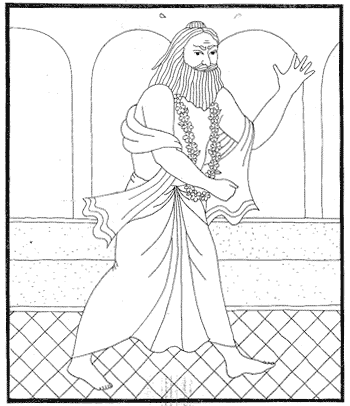

La Historia De Vamanadeva
Hace mucho tiempo atrás, Bali Maharajá, nieto de Pralad Maharaja, deseó conquistar el trono de Indra, Con este fin realizó un sacrificio llamado “Visva-jit” Quien ejecuta este sacrificio alcanza el fruto de poder conquistar el mundo entero. Cuando el ghee estaba siendo ofrecido en el fuego del sacrificio, salió un carro de oro y sedas, tirado por caballos amarillos iguales a los de Indra, y con una bandera marcada con el signo de un león. Un arco brillante, dos carjas de flechas infalibles, y una armadura celestial también aparecieron : Prahlad Maharajá le regalo una guirnalda que no desvanecía, y su maestro Sukracarya, una caracola. Después de circumbambular a los brahmanas y a su abuelo, subió a su carro , vistiendo su armadura y llevando una espada, un carcaj y el arco celestial. Sus brazos estaban decorados con brazaletes de oro , y sus orejas con aros de zafiro. Se veía hermoso brillaba, como un adorable fuego . Rodeado por sus comandantes y soldados, que lo igualaban en belleza, fuerza y opulencia, parecía que iban a devorarlo al cielo tan con solo mirarlo. Así partieron hacia la capital de Indra. La ciudad de Indra estaba llena de hermosos jardines, como el famoso Nandana: en ellos habían múltiples flores y aves trinando, y se escuchaba el zumbido de las abejas. La ciudad estaba rodeada por altos muros de color del fuego y tenía portones de oro y entradas de mármol. Las calles estaban hechas de perlas y habían asientos de diamante y coral. Tenia mas de cien millones de aeroplanos y se escuchaba siempre una música agradable acompañados de l canto de los Gandharvas y del baile de las Apsaras. Todos los habitantes eran jóvenes y bellos y las flores perfumaban la suave brisa. En resumen la ciudad de Indrapuri, la ciudad de Indra, derrotaba a la misma belleza. Bali Maharajá rodeó esta hermoso ciudad, a la que ninguna persona envidiosa, violenta, orgullosa o mentirosa podía entrar con su innumerable ejército. Indra muy sorprendido al ver el poder de Bali , se acercó a su maestro Brihaspati y le preguntó “ ¡O maestro! ¿ De donde Bali a obtenido tanto poder?! Su maestro Brihaspati le explico que Bali había recibido la bendición de los brahmanas de la dinastía Bhrigu, y que , por lo , tanto , por tener poder bramínico o brama-tejas, se habia vuelto invencible a todos los demás . “lo único que puede hacer, -le dijo- es huir y esconderse, y esperar que Bali cometa alguna ofensa, y pierda por ello la gracia de los Brahmanas. Siguiendo el consejo de su guru, los semidioses adoptaron distintas formas y de fueron sin ser vistos Bali entonces ocupó la ciudad y el asiento de Indra, y de ahí propició cien sacrificios de caballo, para asegurar su buena fortuna. Gracias a la bendición de los brahmanas y sus sacrificios , ganó buena fama y brillaba, como la luna en el cielo. Aditi, la madre de los semidioses, estaba muy afligida al ver la condición de sus hijos, que habían sido echados de su residencia en el cielo. Su esposo , el Prajapati Kasyapa, al volver a casa después de un largo tiempo en trance, encontró a su esposa muy dolida, y entonces le dijo: “por complacer al Supremo a través de la devoción o Bhakti , podrás satisfacer todos tus deseos.” Y como Aditi se mostró muy deseosa de complacer a Vishnu su esposo Kasyapa le enseño como realizar el sacrificio payo-vrata, mediante el cual el Señor se satisface y todos nuestros deseos se cumplen. Aditi siguió todas las instrucciones de su esposo, puso su mente y sentidos bajo control, y adoró al Señor a través del sacrificio de Payo-vrata, hasta que un día Él apareció ante ella . Tenía su ropa amarilla y sus cuatro brazos, que llevaba la caracola, el disco, el loto , y el mazo. Aditi se puso de pie al verlo y luego le dio reverencias, su cuerpo temblaba y se le erizaron los vellos de la piel. Luego le oró diciendo: “!Oh Señor! Tu santo nombre expande la buena fortuna a todo el Universo, cuando tu estas complacido con alguien, no hay nada que esa persona no pueda obtener.” A estas palabras el Señor le dijo “Yo se Aditi que quieres recuperar a tus hijos, y junto con ellos adorarme a mi pero ahora los demonios se han vuelto muy poderosos, por contar con el favor de los Brahmanas: aun así, porque me has adorado debo ayudarte, y naceré como hijo tuyo y ayudaré a mis hermanos. Después de recibir esta bendición del Señor, Aditi se acercó a su santo esposo para adorarlo tal como el Señor se lo había indicado. Su esposo Kasyapa estaba en profunda meditación y en su trance pudo ver que el Señor estaba entrando en Él . luego del cuerpo de Kasyapa el Señor pasó al cuerpo de Aditi, y esto lo hizo sentirse muy felíz. Cuando el señor Brahma supo que Visnu se encontraba en el vientre de Aditi, también se puso muy felíz y lo empezó a adorar diciendo: “!Oh, Señor! Te ofrezco mis reverencias respetuosas. Tú en todo te encuentras, y ya antes viniste a salvarnos como hijo de Prisni, quien era Aditi en otra vida...Así como un bote es la única esperanza para alguien que se ahoga, así tu eres la única esperanza para los semidioses, en este momento de tribulaciones.” Después de la oración de Brama el Señor nació del vientre de Aditi su ropa era amarilla y tenía cuatro brazos. Su cuerpo era oscuro, y estaba decorado con bellos aros, pulseras y brazaletes, todo el universo estaba feliz. Los semidioses cantaban y bailaban... Cada estación mostraba sus virtudes y todos los planetas se mostraron muy caritativos...Su padre Kasyapa estaba también muy feliz y exclamaba: ¡Jay, Jay! Luego el Señor, que apareció con ornamentos y armas , asumió la forma de un pequeño niño brahmana, llamado Vamana, los sabios muy felices celebraron la ceremonia de su nacimiento y el dios del sol le entregó el Gáyatri mantra. Brihaspati le dio el cordón sagrado, y su padre le dio un cinturón de paja. Madre tierra le dio una piel del venado : el dios del a luna, que es el dios del bosque, le dio una vara: su madre Aditi le dio una tela para kaupin y el Dios del cielo le dio una hermosa sombrilla. El señor Brahma le regaló un kamandalu y su esposa Sarasvati, una yapa de rudraksa. Kuvera le dio un pote para mendigar: y Bhagavati, la casta esposa del señor Siva, le entregó la primera limosna. Todos estaban muy felices y el Señor Vamana, brillando con la efulgencia del Brahmán, realizó un sacrificio de fuego. Después decidió ir y dar su gracia a Bali Maharajá, quien, con un grupo de Brahmanas, también llevavaba a cabo un gran yajña. La tierra descendía a cada paso de Vamanadev, y al acercarse al lugar donde Bali se encontraba, su efulgencia era tan grande, que todos pensaron que era el dios del sol, Sanat-Kumara, o el dios del fuego que los vicitaba. Mientras esto discutían Vamanadev entró en la arena del sacrificio Asvamedha, su efulgencia hizo disminuir el brillo del todos los presentes. Bali Maharajá quedó cautivado por su belleza, sintiéndose bendecido con esa visita, el mismo lo adoró lavándole los pies, y luego hecho esa agua en su cabeza y le dijo “!Oh Brahmana! La tierra se santifica con el contacto de tus pequeños pies, y por tu presencia, todos mis familiares serán bendecidos, y el sacrificio que realizo ha alcanzado la perfección. Sin duda as venido a pedirme algo y puedo darte lo que quieras, ya sea una casa, oro, una niña por esposa, pueblos prósperos, carros , caballos, elefantes... o cualquier otra cosa que desees”. El Señor elogió a Bali por seguir la etiqueta y por pertenecer a una familia en cuyo linaje nunca nadie había faltado a su palabra, y nunca nadie se había negado a dar caridad a un brahmana. “Tu desciendes del gran Pralad Maharaj, quién es como la luna brillando en el cielo – le dijo el Señor a Bali-y tu padre Virocana era tan generoso con los brahmanas , que incluso le dio su vida cuando se la pidieron” “ sabiendo esto –continuo el Señor- no dudo en que me darás la caridad que te pida. Solo tres pasos de tierra solicito a Ti, con esto me conformo, pues no es correcto pedir mas de lo que uno en realidad necesita. Bali Maharaj considero que el señor le pedía muy poco y le dijo: “Eres muy pequeño aun y veo que no sabes bien que necesitas: soy el dueño de los tres mundos y puedo, si quieres, darte todo un planeta: quien viene una ves a pedirme algo de mi , ya no debe solicitar de ningún otro un una cosa mas.” A estas bellas palabras de Bali Maharaj el señor le respondió: “!Oh, rey! Una persona que no controla sus sentidos nunca puede estar satisfecho, ni siquiera si posee el mundo. Uno debe aprender a estar conforme con aquello que el Señor nos envía por su propio acuerdo, pues el poder de un brahmana insatisfecho disminuye , como disminuye el fuego cuando se le echa agua. Pedir lo que es estrictamente necesario, es el secreto para alcanzar la verdadera felicidad. Bali Maharaj aprecio las palabras del niño brahmana y le dijo: “esta bien , toma lo que quieras...” Pero en ese momento Sukracarya, el maestro de Bali, se acercó a él y le dijo: “Eres un gran tonto, ¿no te das cuento que este niño es Visnu disfrazado que viene a quitarte todo? Con solo dos pasos el cruzará todo el universo y no dejará espacio para el tercero, y entonces, porque no podrás cumplir con tu promesa, te enviará al infierno. Como aun no as pronunciado el “om” , todavía estas a tiempo para retractarte de lo ofrecido, así es que no le des nada, pues como que digo el es Visnu, el enemigo de los demonios. A estas palabras de Sukracaria. Bali Maharaj le dijo: ¡Oh maestro! ¿Cómo yo, un descendiente de Pralad Maharaj, voy a faltar a mi promesa? Nadie es peor en el mundo que alguien que no es verás. Incluso madre tierra misma a dicho, que ella tolera el peso de las montañas y océanos pero que no soporta el peso de un hombre mentiroso. Además esta tierra que voy a dar, igual lo voy a perder cuado muera, por eso prefiero dárselo a una persona santa, que crea lugares sagrados. Grandes personalidades como Sibi y Dadhici, ganaron reputación eterna por haber sido magnánimos: así puedo ver que al fin todo se pierde en este mundo, menos la buena fama de haber sido verás, heroico y generoso. “Sukracaria se enojó mucho al oír éstas palabras y maldijo a su discípulo a que perdiera toda su opulencia.  A pesar de haber sido maldecido por su maestro espiritual, Bali Maharaj no se desvió de su determinación, y tomando agua, se preparó para hacer el rito de la donación. Su buena esposa Vindhyavali, que estaba decorada, con un collar de perlas, trajo un jarro de oro para lavar los pies de Vamanadev. Los habitantes del cielo glorificaron el acto de Bali Maharaj, lloviendo millones de flores sobre él y exclamando: “!Que grande es Bali Maharaj y que acción tan difícil esta llevando a cabo, a un sabiendo que el señor Visnu esta del lado de los semidioses, él lo esta dando los tres mundos en caridad. Entonces el ilimitado Señor aumento su tamaño de tal manera que todo el universo quedó contenido dentro de él , con un solo paso cubrió toda la tierra, cubrió el cielo con su cuerpo y todas las direcciones con sus brazos. Con el segundo paso cubrió los planetas celestiales hasta topar con su pie en el borde mismo del universo: de esta manera no dejó ni un lugar donde dar su tercer paso. Cuando el Señor Brama vio el brillo de su planeta superado por el brillo de las uñas de los pies de Vamanadev, fue con los semidioses a adorar al Señor y con el agua de su kamandalu lavo sus pies de loto, esta agua purificada por los pies de Vamana, se transformó en el río Gangues que todo purifica a su paso. Mientras lo adoraban gritaban ¡Jay! ¡Jay!, y tocaban caracolas, tambores, trompetas, cantaban y bailaban. Mas por su lado los demonios no estaban nada de contentos. Ellos , muy enojados , dijeron :”Este Visnu es un engañador. Él ha venido en el disfraz de un niño brahmana mendigo, pero en realidad es Visnu, el amigo de los semidioses y nuestro enemigo. Él se aprovecha de que nuestro rey , Bali Maharaj, es muy noble veraz y que por estar haciendo un sacrificio no puede pelear : ¡nosotros debemos defender su causa!, ¡debemos luchar por nuestro rey!” Diciendo esto atacaron el ejército de los devas, pero los semidioses lo derrotaron con facilidad, por ello Bali Maharaj le dijo a sus seguidores: “El factor tiempo no esta ahora a favor nuestro, como lo estuvo antes, por ello, dejen de luchar de inmediato. Solo cuando la providencia esté de nuestro lado, podremos vencer a los mismos que en un pasado ya vencimos.” Obedeciendo la orden de su maestro, todos los demonios descendieron a los planetas inferiores, llevados por los soldados del señor Visnu. Y cuando el sacrificio de Bali estuvo terminado , el Garuada, entendiendo el corazón de su señor, arrestó a Bali Maharaj con la soga de Varuna. Cuando esto aconteció, se escucho una tumultuosa protesta en todo el Universo. Vamanadev le dijo a Bali: “ Prometiste darme tres pasos de tierra , pero con solo dos pasos abarque todo el universo, ¿dónde daré entonces mi tercer paso?: porque no fuiste capas de cumplir tu promesa tendrás que descender por unos años al infierno. A todo esto, a pesar de que vamanadev se mostraba externamente muy duro con Bali Maharaj,. El rey no perdió su determinación de cumplir con lo prometido y dijo: “!Oh, Señor Supremo! ¡Adorado por los devas! Si piensas que no e cumplido con lo que te dije, yo deseo rectificarlo de inmediato, y por ello te pido ¡que des tu tercer paso sobre mi cabeza!, pues nada temo en el mundo como la infamia. Se que al darme este castigo solo buscas corregirme y beneficiarme, pues Tú eres el mejor amigo de todos , y sólo como un juego te muestras como enemigo de los demonios. En realidad siempre vienes a quitarnos nuestro orgullo , y muchos de los nuestros alcanzaron por tu gracia, la misma posición que obtienen grandes yoguis. Solo con el fin de favorecerme, has venido a quitarme todo aquello que ya estaba destinado a perder a su debido tiempo. En ese momento llegó Pralad Maharaj, brillando como la luna. Al verlo Bali Mharaj, quién estaba atado por la serpiente Varuna, inclinó su cabeza avergonzado. Pralad Maharaj le dijo al Señor: “Por Tu gracia, mi nieto Bali obtuvo la soberanía de los tres mundos, y por Tu gracia también , ahora la ha perdido. Pienso que en ambos casos actuaste en forma maravillosa. Primero al darle los tres mundos , le mostraste como la opulencia material confunde nuestra inteligencia y nos vuelve orgullosos, y luego lo liberaste de ese peligro privándolo de todo. La esposa de Bali Maharaj, Vindhyavali, también se dirigió al Señor, diciéndole: “!Oh Señor! Tú creas el mundo para tu placer, pero los hombres ateos se creen dueños de él . Ellos piensan que van a dar caridad y que van a disfrutar , pero, ¿qué hacen ellos para complacerte a Ti?” También el señor Brama le dijo al Señor: ¡Oh Señor Vamana! Si alguien tan solo te ofrece una fruta, flor o agua, tú lo bendices, ¿por qué entonces tratas así a Bali Maharaj, quién , sin duplicidad, te ha dado el universo entero, incluido su propio cuerpo.” El señor Vamana le dijo a Brahma: “Mi querido Brahma, cuando una persona posee muchos bienes , fama, educación o belleza, a menudo se vuelve orgullosa y no respeta a los otros, a veces Yo muestro un favor especial a ellos y los privo de todos sus atributos. Esto hice con Bali Maharaj, y a pesar de todo , él permaneció sujeto a la verdad y a cumplir su promesa, por eso en un futuro él ocupará el trono de Indra, durante el periodo del Manu Savarni: mientras tanto , que viva en el magnífico planeta Sutala, que fue creado por Visvakarma, ahí podrá vivir sin ninguna ansiedad ni impedimento, pues Yo mismo lo protegeré con Mi disco sudarsana, y además siempre podrá verme.” Después de oir esto, Bali maharaj ofreció sus reverencias al señor y después a Brahma y a Siva, y luego oró diciendo :”!Oh, Señor! Eres tan misericordioso , que por solo uno tratar de ofrecerte reverencias, me das más bendiciones que a los mismos semidioses. ”Pralad Maharaj también adoró al Señor y Vamana le dijo que fuera junto con su nieto y sus amigos al Sutala donde podrían vivir siempre en buena compañía y felices. Los semidioses a su vez recuperaron sus residencias celestiales, dando con esto alegría a su madre Aditi, que había orado al Señor por esto. Todos adoraron al señor y lo glorificaron aceptándolo como el protector Supremo. El señor Brahma también volvió a su morada junto con su séquito, y todos elogiaron también a Kasiapa y a Aditi. Escuchar ésta bella historia de Vamanadev y su gran devoto Bali Maharaj es muy auspicioso , el corazón se purifica y uno vuelve a casa, ¡de vuelta a Dios!
Sri Vamanadeva Ki jay! HARI BOL! |